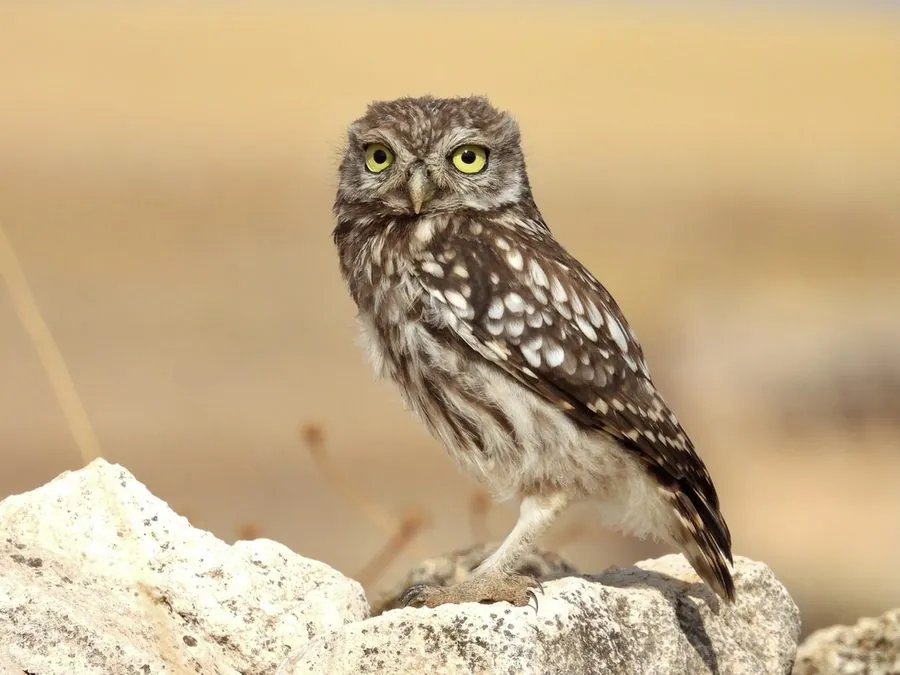

鸟类 · 动物界
纵纹腹小鸮 Athene noctua

体形小巧、眼睛亮黄的鸮类，白天也常站在田埂、石堆上活动，以昆虫和小型啮齿类为食，多见于北方农田。
- 分类
- 门脊索动物门纲鸟纲目鸮形目科鸱鸮科属小鸮属
- 栖息环境
- 农田、草原、荒漠、村庄与城镇边缘，多在洞穴和缝隙中营巢
- 地理分布
- 欧亚大陆和北非，中国北方、华北和西北地区较常见
- 保护级别
- IUCN 无危（LC）；中国国家二级保护动物
物种志
纵纹腹小鸮体长 21–23 cm，体重约 105–220 g，翼展 50–58 cm，是体形较小的鸮类。它的头部扁平，没有耳羽簇，眼睛亮黄色，面盘不太明显；上体灰褐色并密布白色斑点，下体白色至淡褐色，腹部有粗重的褐色纵纹，因此得名。它的腿细长，脚黄色。
纵纹腹小鸮广泛分布于欧亚大陆和北非，中国北方、华北和西北地区较常见。它们栖息在农田、草原、荒漠、村庄和城市边缘，多在白天活动，常站在田埂、土堆、电线杆和石墙上等待猎物，捕食昆虫、蚯蚓、小鼠和蜥蜴，也吃小鸟。繁殖期在树洞、墙洞、岩缝或人工巢箱中产卵，每窝 3–5 枚，孵化约 28–29 天。纵纹腹小鸮是农田益鸟，中国将其列为国家二级保护动物。
形态与习性
- 食性昆虫、蚯蚓、小鼠、蜥蜴和小鸟
- 体长21–23 cm
- 体重约 105–220 g
- 翼展50–58 cm
- 繁殖每窝 3–5 枚卵，孵化约 28–29 天
- 寿命野外约 8–10 年
- 习性白天也活动，常蹲在田埂和土堆上守候猎物
趣味知识
- 纵纹腹小鸮白天也会活动，常蹲在田埂和土堆上守候猎物。
- 它没有耳羽簇，头部扁平，黄色的眼睛十分醒目。
- 腹部粗重的褐色纵纹是它名字的由来。
- 它们很适应人类环境，也会住进人工设置的巢箱。